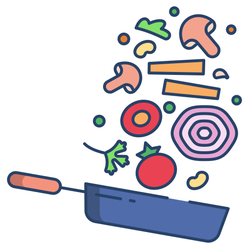

<main>
  <nav>
    <a mat-flat-button routerLink="/recipes" ariaCurrentWhenActive="page">
      
    </a>
    <a mat-flat-button routerLink="/ingredients" ariaCurrentWhenActive="page">
      
    </a>
  </nav>
</main>
